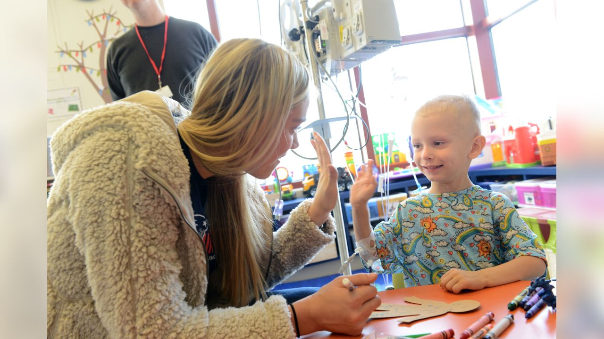
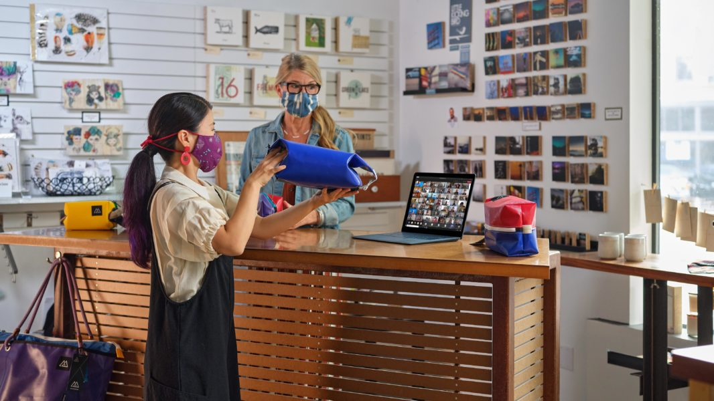

Na página de contribuição rápida você faz o bem sem a necessidade de vincúlo com a
plataforma,
qualquer
tipo de cadastro ou informe de dados pessoais, basta apenas selecionar um valor, causa e doar.
Seja o motivo do sorriso de alguém!
First slide label
Some representative placeholder content for the first slide.
Second slide label
Some representative placeholder content for the second slide.
Third slide label
Some representative placeholder content for the third slide.
Contribuições Causas Independentes

Campanha Banco de Sangue Hospital Esperança
O Hospital Esperança é referência em tratamentos contra o cancêr infantil. Nessa campanha
estamos levantando fundos para o crescimento do acervo de bolsas sanguineas
para as crianças através de eventos, publicidade e atividades que estimulem mais
as doações de sangue.
Campanha de alimentação Grupo Mais ajuda / Porto Rico
Ajudando pessoas em baixas condições de vida, o Grupo
Mais ajuda tem sido extremamente importante para a população
de Porto Rico mesmo sem nenhum tipo de ajuda governamental.
Nessa campanha estamos levantando fundos para distribuir cestas basicas e alimentação
de qualidade às pessoas carentes vítimas da fome e da violência das zonas de baixa renda do país.
Campanha Suprindo Vidas We can / Guerra da Ucrânia
We can é um grupo de atuação voluntária que está
ajudando grupos de refugiados na Ucrânia durante está guerra.
Nessa campanha estamos levantando fundos e doações para suprir as vidas que dependem
dessa ajuda enquanto resistem às invasões com comida, água potável e suprimentos médicos.
Campanha Nasciemnto Solidário Mães das favelas
A entidade Mães das favelas é um grupo de ajuda comunitario sem fins lucraticos
que visa ajudar e melhorar a qualidade de vida das mães e seus bebês que vivem em comunidades
carentes. Nessa campanha estamos levantando fundos para doações de enxovais para mães de recém
nascidos.
Contribuições Causas Patrocinadas
Campanha Contra a AIDS Apple Red
A gigante da tecnologia Apple em parceria com a Filantropix inaugura sua mais nova campanha Apple
Red.
Nessa campanha a empresa disponibiliza descontos em qualquer um dos seus produtos aos doadores que
participarem do
levantamento de fundos à campanha destinada a luta contra a AIDS em páises de alta taxa de pobreza.

Campanha de incentivo juvenil Microsoft TecTeens
A gigante da tecnologia Microsoft em parceria com a Filantropix inaugura sua mais nova campanha
social TecTeen.
Nessa campanha cada doação será utilizada para o incentivo à educação tecnológica e formação de
jovens carentes, premiando cada
doador com licenças gratuitas de ses softwares.
Campanha de alimentos Outback Contra a Fome
A gigante da tecnologia Microsoft em parceria com a Filantropix inaugura sua mais nova campanha
solidária Outback Contra a Fome.
Nessa campanha cada doação será destinada a um fundo de ajuda á alimentação básica de crianças e
adultos em situação de rua, premiando cada
doador com vouchers de descontos em seus restaurantes.
Campanha Social Vivo Selfie
Ajudando pessoas em situação de pobreza a gigante da telecomunicação vivo em parceria com a
Filantropix inaugura
sua mais nova campanha de ajuda social. Oferencendo descontos em seus planos de internet aos
participantes da campanha, a vivo levará
internet e acesso á informação a centenas de jovens e adultos que vivem em comunidades por meio de
internet gratuita.

.jpg)